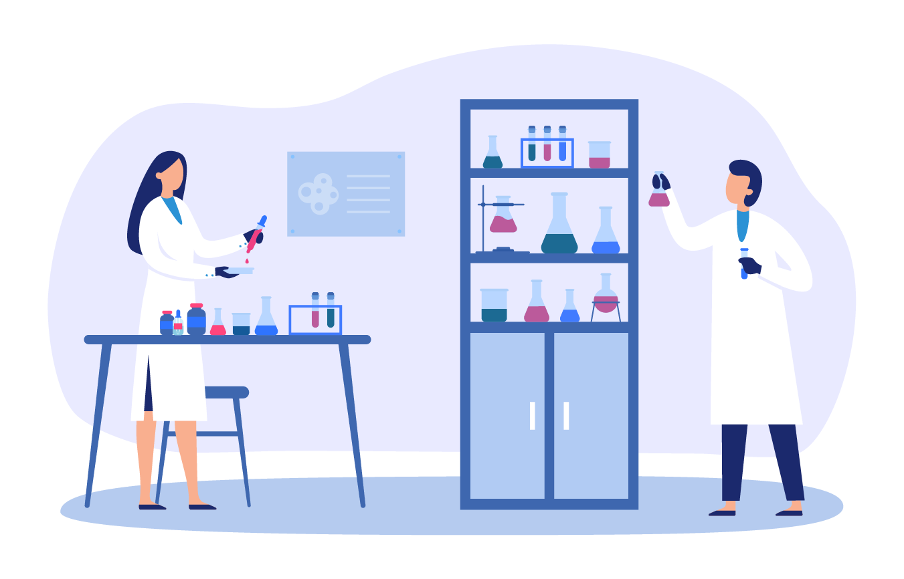

🎓 Healthcare CoE Training Program
📌 Our Vision
Mindbowser Healthcare Tech Training is an initiative designed to equip developers, QA engineers, and tech professionals with essential knowledge and skills in healthcare technology. The goal is to bridge the gap between healthcare and technology by providing comprehensive training sessions that cover key aspects of the health tech ecosystem.
🎯 Why This Training?
- Healthcare technology is becoming increasingly complex.
- Growing demand for interoperability expertise.
- Critical shortage of skilled healthcare integration professionals.
- Need for practical, hands-on experience with modern healthcare standards.
- Rising adoption of FHIR and SMART on FHIR technologies.
🏆 Training Structure — Certification Levels
🥉 Level 1: Foundational Certification
- Basics of US Healthcare: Overview, Provider & Payer Market, HIPAA Compliance.
- Interoperability: Data sources, needs, levels, and benefits.
- HL7 Standards: v2, v3, CDA, FHIR.
- Basics of FHIR: Data model, key resources (Patient, Org, Practitioner), server setup, CRUD operations.
- Basics of HL7 v2: Event triggers, segments, reading messages.
- SMART Framework: Overview, use cases, launch types.
- Final Assessment for certification after each section.
🥇 Level 2: Advance Certification
- Revenue Cycle Management: Workflow, clearinghouse integrations, claims workflow.
- Advanced FHIR: Extensions, bundles, validation tools, subscriptions, practical use cases.
- Advanced HL7 v2: Parsers, simulators, TCP/HTTP, integration types (VPN + MLLP, TLS, SFTP), security.
- SMART Framework Deep Dive: OAuth 2.0, OpenID Connect, demos with EHRs.
- Solution Accelerator Project: Hands-on demo with various EHRs.
- Final Assessment for certification after each section.
🤝 Volunteer to Host a Session
Become part of the Healthcare Center of Excellence (CoE) — share your expertise and help grow the next generation of healthcare integration professionals.
📋 HL7 FHIR Basics & Agenda
HL7 FHIR Basics – A Foundation for Interoperability
A deep dive into the history, purpose, and architecture of HL7 standards — culminating in a practical introduction to FHIR (Fast Healthcare Interoperability Resources).
By Arun Badole
🗂️ Session Agenda
- History & Purpose
- HL7 v2 vs v3 Payload
- Interoperability
- FHIR
- HL7 FHIR Products Breakdown
- What is FHIR: Definition
- Five FHIR Things
- The FHIR Manifesto
- FHIR Data Model
- Data Types
- Demo Exercise
📄 The Paper-Based Medical Records Era
Before digital systems, healthcare organizations relied entirely on paper records — creating significant challenges in access, safety, and efficiency.
🔍 Challenges in Access, Sharing & Analysis
- Difficult to access patient records across locations.
- Limited ability to share information among providers, leading to fragmented care.
- Inefficient analysis of historical patient data for research and treatment improvement.
⚠️ Risk of Data Loss & Security Concerns
- Physical damage (fire, water) could destroy records.
- Unauthorized access due to lack of secure storage methods.
📦 Physical Storage Limitations
- Large volumes of paper requiring extensive physical space.
- Manual retrieval processes leading to operational inefficiencies.
💻 Early Digital Systems & Standardization Attempts
🖥️ Early Digital Systems: The Technical Evolution
Proprietary Systems (1970s–1980s)
- Individual Vendor Solutions: Vendors created isolated systems for billing, lab reports, and clinical documentation.
- No Standardization: Each system had its unique data formats and communication protocols.
- Point-to-Point Interfaces: Expensive and complex custom integrations were needed for systems to communicate.
Key Issue: Lack of interoperability, leading to silos of healthcare information.
🔌 Early Standardization Attempts
- Custom Interfaces: Organizations built custom code to connect disparate systems, leading to high maintenance costs.
- File Transfers: Sharing patient information via file transfers (e.g., CSV, HL7 v2 messages) between systems.
- Database Replication: Direct replication of databases — prone to synchronization issues and scalability problems.
Challenge: These methods were fragile, costly, and lacked universal standards.
🔄 Need for the Data Exchange & Standards
A common data exchange standard enables interoperability — letting independent systems built by different vendors talk to each other reliably, without custom one-off integrations.
💳 The UPI Analogy
UPI is the best real-world example of a data exchange standard — it enables different apps, banks, and vendors, on Android or iOS, to seamlessly complete transactions with each other. Healthcare standards like HL7 and FHIR aim to do the same for patient data: enabling any EHR, lab system, or pharmacy app to exchange information regardless of vendor.
🏥 Healthcare Example Use Case
Consider a single patient journey — it touches multiple systems and people, each generating a different type of healthcare information that needs to be exchanged accurately and securely.
💊 Prescription
A physician issues a prescription for the patient, generating a record that needs to reach the pharmacy electronically.

🔬 Referral / Discharge Summary
The patient is referred to a specialist or lab, generating referral and discharge summary documents that follow them across providers.
🏨 Service Request / Diagnostic Report
The hospital processes a service request (e.g. a lab test or imaging order) and returns a diagnostic report back to the care team.
🔗 One Patient, Many Systems
Without a shared standard, each of these document types would need a custom integration between every pair of systems. HL7 and FHIR exist to make this exchange consistent, predictable, and scalable.
🧩 What is a Standard?
A standard is:
✅ Standards Enable Interoperability
🏛️ Standards Bodies & Examples
Bodies: ISO, ANSI, HL7
Standards: DICOM, SNOMED, HL7 V2, V3 & FHIR
Real-world Example: UPI by the National Payments Corporation of India (NPCI)
🌐 Interoperability
"Interoperability in healthcare is the ability of different information systems, devices, and applications to access, exchange, integrate, and cooperatively use data in a coordinated manner. This ensures that healthcare providers have timely and secure access to patient information, enabling better clinical decisions and improving patient outcomes."
🔑 Key Aspects of Interoperability
🧱 Foundational
Basic data exchange without interpretation.
🏗️ Structural
Consistent data format across systems for accurate interpretation.
🧠 Semantic
Shared understanding of the meaning of exchanged data.
🧱 Types of Interoperability
⚙️ Technical Interoperability
Technology Layer: Connected via internet/wires so data can be exchanged, using the same format (JSON, XML, etc.)
🧩 Semantic Interoperability
Data Layer: Data which is understandable by all the parties.
👥 Process & Clinical Interoperability
Human Layer: Enables users to be able to use the data — willingness to do so.
🏛️ Institutional Interoperability
Culture of not sharing data, education, regulations barring data exchange, and incentives that influence adoption.
🚧 Healthcare Interoperability Challenges
- 🖥️ Disparate health systems
- 🧠 Semantic interoperability
- 🔄 Exchange of patient information
- 🔒 Data privacy and security
- 📜 Compliance to healthcare standards
- 🧑⚕️ Service provider experience
- 🙂 Patient experience
- 📊 Measurement of health outcomes
🎯 Purpose
Health organizations typically have many different computer systems used to process different patient administration or clinical tasks, such as billing, medication management, patient tracking, and documentation. All of these systems should communicate, or "interface", with each other when they receive new information or when they wish to retrieve information.
🌍 Levels of Healthcare Interoperability
🏢 Inter Departmental
E.g. CT — exchanging information between departments within the same facility.
🏥 Inter Organization
E.g. Registration & Clinician, Radiology — exchange between different organizations.
🏘️ Community
Patient data access outside the organization — referring a patient to a different clinic or organization.
🌐 Global
Regional, National & International exchanges — with all of these layers, standards remain essential.
⏳ Evolution of Healthcare Standards
Healthcare data standards have evolved over six decades — from the earliest digital health systems to the modern, web-native FHIR standard.
📡 HL7 V2 vs HL7 V3
📨 HL7 V2
- Message-based format.
- Widely adopted (still in use).
- Uses pipe (
|) delimited syntax.
Sample ADT^A04 Message:
MSH|^~\&|EPIC|EPICADT|SMS|SMSADT|199912271408|CHARRIS|ADT^A04|1817457|D|2.5| PID|||0493575^^^2^ID 1|454721||DOE^JOHN^^^|DOE^JOHN^^^|19480203|M||B|254 MYSTREET AVE^^MYTOWN^OH^44123^USA||(216)1234567||M|NON|400003403~1129086| NK1||ROE^MARIE^^^|SPO||(216)123-4567||EC| PV1||O|168 ~219~C~PMA^^^^^^^^^^^|||277^ALLEN MYLASTNAME^BONNIE^^^^|||||||||||||2688684|||||||||||||||||||||||||||199912271408||||002376853
🧬 HL7 V3
- XML-based format.
- More complex and structured.
- Lower adoption rate due to complexity.
Sample CDA Document:
<ClinicalDocument xmlns="urn:hl7-org:v3"> <typeId root="2.16.840.1.113883.1.3" extension="POCD_HD000040"/> <templateId root="2.16.840.1.113883.10.20.22.1.1"/> <id root="2.16.840.1.113883.19.5.99999.1"/> <code code="34133-9" displayName="Summarization of patient data"/> <title>Clinical Document</title> <effectiveTime value="20150519"/> <confidentialityCode code="N" displayName="normal"/> <recordTarget> <patientRole> <id root="2.16.840.1.113883.19.5" extension="12345"/> <patient> <name> <given>John</given> <family>Doe</family> </name> <administrativeGenderCode code="M"/> <birthTime value="19480203"/> </patient> </patientRole> </recordTarget> </ClinicalDocument>
🔥 HL7 FHIR: The Beginning
- Started from scratch — a clean break from the complexity of HL7 v3.
- Web technologies: Built for the RESTful world — HTTP verbs (GET, PUT, POST, etc.) acting on Resources.
- Inspired by the Basecamp Highrise API — simple and straightforward.
- Resources for Health — modeling healthcare concepts as addressable web resources.
🔤 FHIR Acronym
🏥 Healthcare
A modern, web-based approach to healthcare data exchange.
🔗 Interoperability
A RESTful API architecture with JSON/XML format support, designed to connect disparate systems.
📦 Resources
Address resources on the internet — like resources from the REST world. View, download, search.
⚡ Fast
Not necessarily quick for data exchange, but fast to adopt — pick up & learn, and quickly become proficient. Integrating with V2 & V3 can take weeks; with FHIR it's relatively faster.
🥜 FHIR in a Nutshell
⭐ FHIR: Five Things, Manifesto & Paradigms
5️⃣ FHIR: Five Things
FHIR is a free and open standard for health interoperability, based on modern approaches. It consists of FIVE THINGS:
- Data Model: A robust data model for describing health and administrative data.
- RESTful API: A RESTful API for interacting with that data using either JSON or XML.
- Open Source Tools: A set of open source tools to implement and test FHIR applications.
- FHIR Servers: A collection of FHIR servers around the world that you can interact with.
- Community: A community of implementers working together.
📜 The FHIR Manifesto
- Focus on Implementers: Developers, not clinicians.
- Target support for common scenarios: V3 tried to cover all use cases — FHIR doesn't.
- Follows the 80-20 Rule: 80% — the spec covers what is needed by 80% of systems; 20% — easy to extend for custom use cases.
- Leverage cross-industry web technologies.
- Require human readability as a base level of interoperability.
- Make content freely available.
- Support multiple paradigms & architectures.
🔀 FHIR Paradigms
FHIR supports 4 paradigms:
🌐 REST
Lightweight, leverages the web stack.
📄 Documents
Long-term persistence.
✉️ Messages
Request/response paradigm.
🧰 Services
Other SOA-based interfaces.
Regardless of approach, content stays the same — the same models and profiles can be leveraged everywhere.
📦 FHIR Resources
📍 What is a Resource?
A resource is an entity that:
- Has a known identity (a URL) by which it can be addressed.
- Identifies itself as one of the types of resource defined in this specification.
- Contains a set of structured data items as described by the definition of the resource type.
- Has an identified version that changes if the contents of the resource change.
🧩 "Resources" Are...
📋 Resource Examples & Non-Examples
✅ Examples
- Patient, Practitioner, Organization
- Location, Coverage, Invoice
- AllergyIntolerance, Condition, FamilyHistory, CarePlan
- Bundle, Binary, Composition
❌ Non-Examples
- Gender: Too Small
- Electronic Health Record: Too Big
- Blood Pressure: Too Specific
🗂️ Data Model — ~150 Resources
FHIR defines a set of roughly 150 resources. These are the building blocks of the specification — examples include:
- Patient — the person who receives healthcare.
- Encounter — a doctor's appointment or hospital stay.
- Observation — e.g. a device reading, or lab value.
- DiagnosticReport — e.g. a whole lab or X-ray report.
- MedicationPrescription — Rx for meds.
🧬 FHIR Resource Anatomy
- Metadata: Essential details about the resource like version, creation date, and status.
- Extensions: Custom fields to add extra data without breaking FHIR compliance.
- Narrative: Human-readable summary of the resource, usually in HTML.
- Body: Core structured data defining the resource's main content.
🔤 FHIR Data Types & Encodings
📑 FHIR Encoding: JSON — Resource Overview
{
"resourceType": "Observation",
"id": "287",
"meta": { // ← Metadata
"versionId": "2"
},
"extension": [{ // ← Extensions
"url": "http://uhn.ca/fhir/readings#context",
"valueCode": "BREAKFAST"
}],
"text": { // ← Narrative
"div": "<div>Fasting glucose of <b>11.2 mg/dl</b></div>"
},
"status": "final", // ← Structured Data
"code": {
"coding": [{
"system": "http://loinc.org",
"code": "41604-0",
"display": "Fasting glucose [Mass/volume] in Capillary blood by Glucometer"
}]
},
"subject": {
"reference": "Patient/1"
}
}
This Observation resource shows the four anatomy parts in practice: meta (Metadata), extension (Extensions), text (Narrative), and the rest of the resource body (Structured Data).
🔢 Data Types: Primitives
| Type | Example |
|---|---|
| string | Patient is awake |
| boolean | true |
| date | 2016-02-19 |
| decimal | 12.347000 |
| integer | 500 |
| uri | http://snomed.info/sct |
| base64Binary | 64rwr3909h= |
| dateTime | 2015-01-26T15:33:13-05:00 |
| instant | 2015-01-26T15:33:13.099-05:00 |
🧩 General Purpose Data Types (Composite)
General purpose datatypes are mini structures that are reused in different parts of the model.
🗃️ FHIR Encodings
FHIR defines 3 encodings:
🟦 JSON
The most popular format, popular with modern internet APIs.
🟧 XML
Still very popular with great tools available.
🟪 RDF/Turtle
Only generally used in some research contexts.
🚀 FHIR Releases
| Release Name | Version Number | Description |
|---|---|---|
| DSTU1 | 0.0.82 | Released in 2014. Very little use today. |
| DSTU2 | 1.0.2 | Released in 2015. Widely used in USA. |
| R3 | 3.0.2 | Released in 2017. Very little use in Europe. |
| R4 | 4.0.1 | Released in 2018. Most new projects use this version as it is the latest release. Specified in new US Regs. |
| R5 | v5.0.0: R5 - STU | This is the current published version. |
🔌 REST APIs & Hands-On
🌐 Anatomy of a FHIR URL
http://hapi.fhir.org/baseR4/Patient/example
└──────────┬──────────┘└───┬───┘└───┬───┘
Base URL Type ID
The root address of the FHIR server — e.g. http://hapi.fhir.org/baseR4
The resource type being requested — e.g. Patient
The unique identifier of a specific resource instance — e.g. example
📄 Example: Patient Resource (JSON)
{
"resourceType": "Patient",
"id": "example",
"text": {
"status": "generated",
"div": "<div>John Doe</div>"
},
"identifier": [{
"use": "usual",
"type": {
"coding": [{
"system": "http://terminology.hl7.org/CodeSystem/v2-0203",
"code": "MR"
}]
},
"system": "urn:oid:1.2.36.146.595.217.0.1",
"value": "12345"
}],
"name": [{
"use": "official",
"family": "Doe",
"given": ["John"]
}],
"gender": "male",
"birthDate": "1948-02-03"
}
🔁 CRUD Operations
GET /Patient/123 POST /Patient PUT /Patient/123 DELETE /Patient/123
- GET — Read a resource (Create-Read-Update-Delete: Read)
- POST — Create a new resource (Create)
- PUT — Update an existing resource (Update)
- DELETE — Remove a resource (Delete)
🛠️ Hands-On Exercise
Access the public HAPI FHIR server:
Example queries:
GET /Patient/exampleGET /Patient?name=Smith
🙏 Thank You
Thanks for completing the HL7 FHIR Basics module!
You now have a foundation in the history of healthcare data standards, the evolution from HL7 V2 to V3 to FHIR, FHIR's core resources, data types, encodings, and REST API model — the building blocks for interoperability.